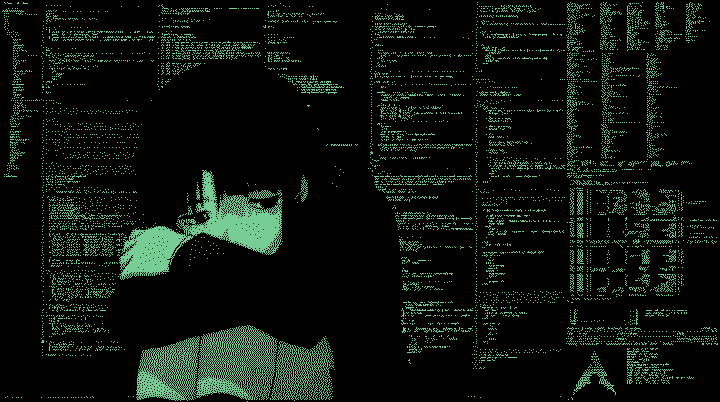

Deck ArkComp é o começo de um projeto pessoal para brincar com CSS e
misturar com a matéria de Arquitetura Computacional.
Não, design gráfico is not my passion.
Mas eu gosto de sites pessoais da era Geocities : )
Esse site usa muitos recursos criados por terceiros como o css de janelas do windows 98 e o
filtro CRT. Mas o código foi adaptado especialmente pra esse projeto e digitado linha por
linha pra praticar e buscar conhecer as tags e suas funcionalidades. SEM IA.
O script foi feito totalmente por mim para cumprir o desafio do conversor de bases.
O código está disponível no Github e comentado, mas fico à disposição pra tirar dúvidas
também.
O que é a Machine?
A machine serve para evitar trabalhos
manuais para conversão
de números dem bases <> da base 10.
O template da SPtechers machine foi desenvolvido por Marise Miranda em
2017-1 e
atualizada por Matheus Matos em 2025-1. A mimiomia's machine é uma
adaptação
criada por Marcelly Pereira em 2026-1 como desafio proposto pelo
professor
Matheus Matos de Arquitetura Computacional.
A versão conta com um conversor para as bases 2, 8, 10 e 16. Atualizando
todos
os campos automaticamente ao clicar no botão "converter".
Para o futuro:
-> Adicionar uma calculadora de operações básicas com as bases.
-> Adicionar interações nos botões da janela.
-> Implementar conversão simultânea sem precisar apertar em calcular.
Digite o número dentro de um campo e clique em converter pra ver a mágia acontecer